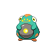

📖 英語版の図鑑説明
When this Pokémon expands and contracts its wobbly body, the belly-button dynamo in its stomach produces a huge amount of electricity.
日本語訳
ぷよぷよした体を伸縮させると、腹部のへそ発電器官が大量の電気を生み出す。
💡 英語名「Bellibolt」の由来
英語名「Bellibolt」は、belly（お腹）とbolt（稲妻）を組み合わせた名前と考えられている。ドイツ語の名前は「Wampitz」で、Wampe（「太鼓腹」のくだけた言い方）、Blitz（稲妻）から作られている。
出典 Bulbapedia
✨ ハラバリーの豆知識
ハラバリーのデザインは、開発中に没になったニョロトノのデザインとよく似ている。
出典 Bulbapedia
📊 ハラバリーの種族値
HP109
こうげき64
ぼうぎょ91
とくこう103
とくぼう83
すばやさ45
合計 495
❓ よくある質問
- ハラバリーの英語名は？
- ハラバリーの英語名は「Bellibolt」です。
- ハラバリーの英語名「Bellibolt」の由来は？
- 英語名「Bellibolt」は、belly（お腹）とbolt（稲妻）を組み合わせた名前と考えられている。ドイツ語の名前は「Wampitz」で、Wampe（「太鼓腹」のくだけた言い方）、Blitz（稲妻）から作られている。
- ハラバリーは英語版の図鑑でどう説明されている？
- 「When this Pokémon expands and contracts its wobbly body, the belly-button dynamo in its stomach produces a huge amount of electricity.」と書かれています。日本語にすると「ぷよぷよした体を伸縮させると、腹部のへそ発電器官が大量の電気を生み出す。」という意味です。
ハラバリーは第9世代（パルデア地方）のポケモンです。第9世代（パルデア地方）の英語名一覧 →